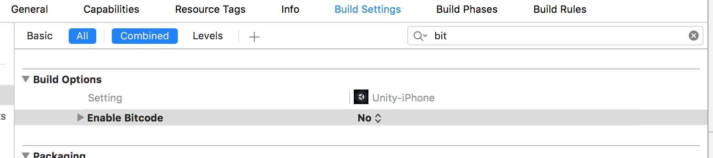
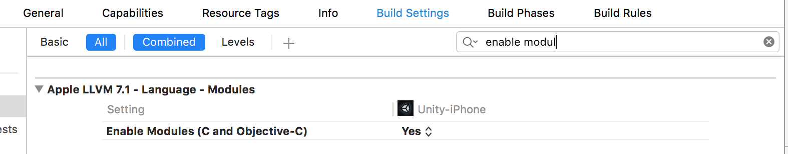

IOS common errors¶
- When you use old version of Unity(4.6 and lower) the included GoogleMobileAds.framework in folder Assets/Plugins/IOS will not be automatically linked to your XCode project. To solve this problem copy GoogleMobileAds.framework to the root of your exported project.
- After that you need to config your build settings
2.1 Disable bit code

2.2 Enable Modules (C and Objective-C)

- If you use xCode 7.2 or higher you could get the following error because of incompatibility new xCode and Unity generated files.
to solve this problem just delete circled `NORETURN` statment.